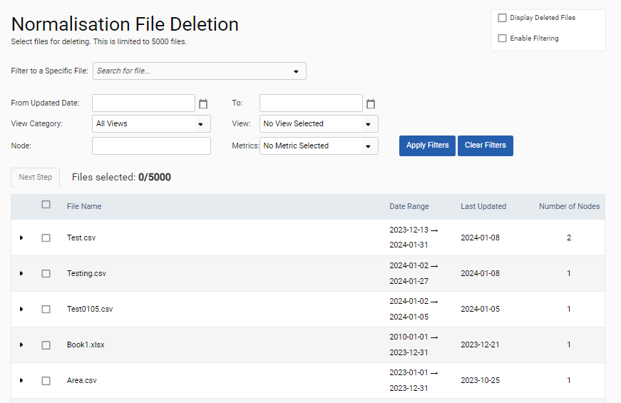
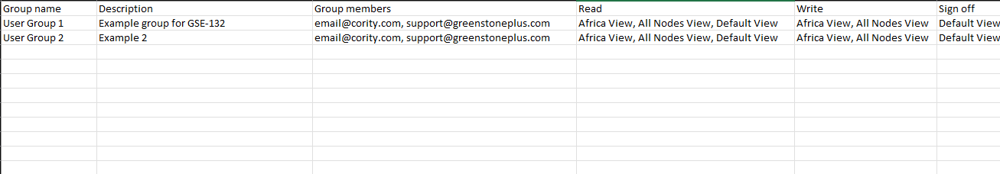
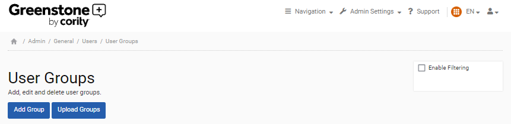
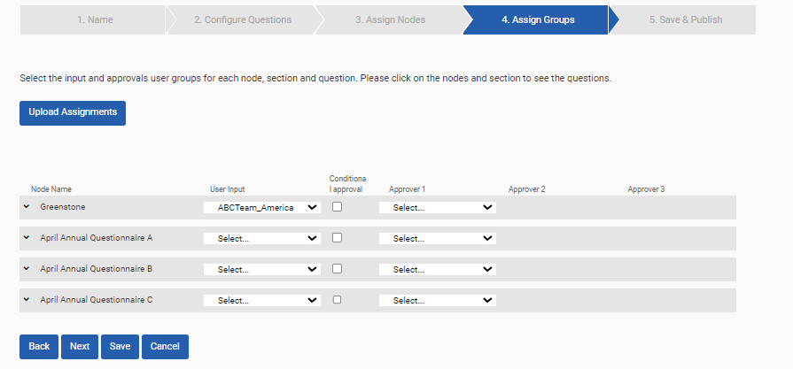
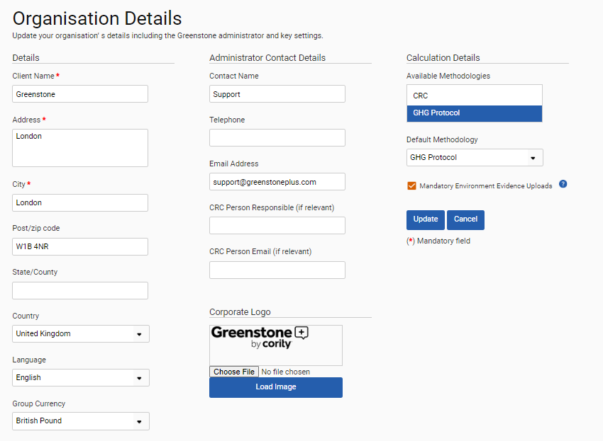

GSE-420: The Environment module now provides users with tools for performing administrative tasks in bulk.
A user can now:
Delete normalization data in bulk

This is achieved using the new Delete Normalisation page under Admin Settings > General > Normalisation > Delete Normalisation. This page provides applicable filtering. From this page, the user can select one or more files and delete them in bulk by clicking Delete. Prior to clicking Delete, the user can cancel all selections by clicking Cancel.
Upload user groups in bulk This is achieved using the new Upload Groups button under Admin Settings > General > Users > User Groups. The user then selects the pre-created Microsoft Excel file for import. The file must have columns Group Name, Description, Group Members, Read, Write, and Sign Off. Only the group name is required. For each group member, a valid user name must be provided. The user names must be separated by a comma. Any user name that contains a comma must be enclosed in quotation marks. If a group name already exists, then this process will update, rather than create, the group.


Assign groups to questionnaires in bulk This is achieved using the new Assign Groups button under Admin Settings > Frameworks > Configure Questionnaire > Assign Groups. The user will then export the template provided, create an Assign Groups file using the template, and then import that file to assign the groups in bulk.

Switch on the mandatory evidence requirement This is achieved using the new ‘Mandatory Environment Evidence Uploads’ check box under Admin Settings > General > Organisation > Organisation Details. The check box is only visible to those who have the Environment module enabled. When the check box is selected, mandatory evidence uploads will be enabled for all input forms.

This includes some performance improvements that will help ensure bulk actions do not impact current performance. For example, the file number limit in Admin Settings > Environment > File Management has been increased from 500 to 5,000. This applies to delete files, reprocess files, freeze files, and unfreeze files.
Note: All of this functionality was first made available in release 2024.1.1.